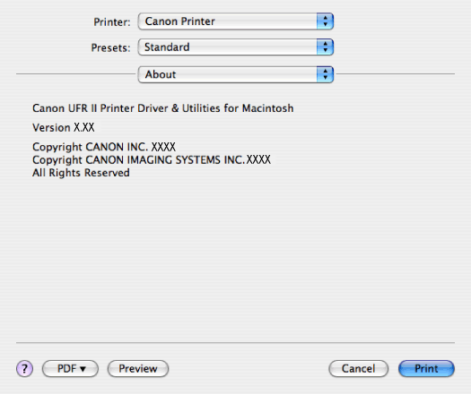

>
Contents
>
Panes and Dialog boxes
>
[About] preferences pane
[About] preferences pane
This pane displays version information about the printer driver.
IMPORTANT
If you are using Mac OS X 10.5 or later, the [About] preferences pane is not displayed.
